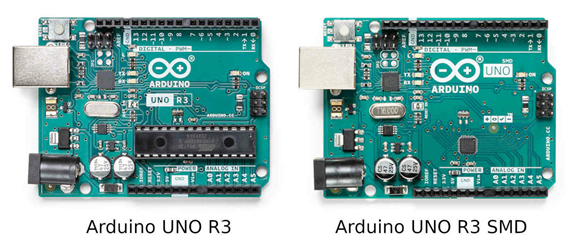
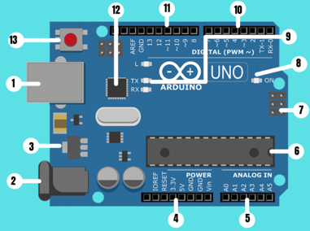
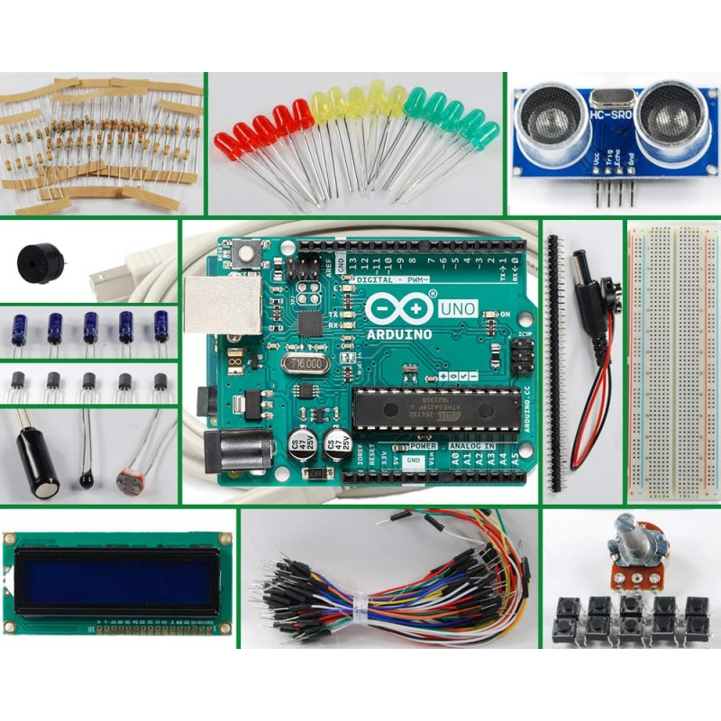
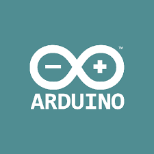
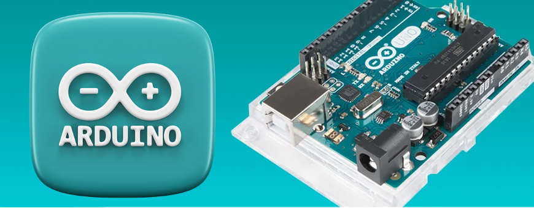

Día 1: Manejo de dispositivos mediante Mblock.
2. Contenido 2: Interacción con la placa Arduino
2.1 Fundamentación teórica
¿Qué es Arduino?
Arduino se utiliza como un microcontrolador tiene un programa cargado desde un ordenador y puede funcionar de forma independiente. En este modo, controla y alimenta dispositivos específicos, toma decisiones basadas en el programa cargado e interactúa con el mundo físico mediante sensores y actuadores.Además, Arduino actúa como una interfaz entre un ordenador u otro dispositivo y el entorno físico. Permite traducir las instrucciones generadas en el ordenador en acciones concretas en el mundo real. De manera inversa, gracias a los sensores conectados a la placa Arduino, es posible recopilar información del entorno para que el ordenador realice acciones.
En el siguiente esquema puedes ver los componentes principales de la placa Arduino UNO:

(1 y 2) Alimentación USB/5VDC: La conexión USB está etiquetada (1) y el conector de la fuente de alimentación (2). Arduino UNO puede ser alimentado desde un cable USB tipo B o mini conectado a tu ordenador. La conexión USB sirve para cargar código en la placa de Arduino desde donde se pueden enviar datos de la programación e instrucciones a la placa.
(3) Regulador de voltaje: Este componente controla la cantidad de voltaje que entra en la placa de Arduino, evitando que un voltaje excesivo dañe el circuito.
(4) Conexiones: Los pines de Arduino se utilizan para conectar los cables necesarios para construir un circuito. Este tipo de conexiones tiene varios pines:
- Reset: Permite el reseteo del microcontrolador.
- 5V y 3.3V: la clavija de 5V suministra 5 voltios de energía, y la clavija de 3.3V suministra 3.3 voltios de energía.
- GND: Hay varios pines GND en Arduino, se usan para conectar a tierra el circuito.
- VIN: Se usa para conectar la alimentación de la placa con una fuente externa de entre 6 y 12VDC.
(5) Puertos de entrada Analógicos: Estos pines pueden leer la señal de un sensor analógico y convertirla en un valor digital que podemos interpretar.
(6) Micro-controlador Atmega 328: Es el circuito integrado que actúa como cerebro o procesador de la placa de Arduino, donde se implementa la programación.
(7) Entrada ICSP (In Chip Serial Programmer): Permite grabar programas en el circuito directamente desde el ordenador sin necesidad de utilizar el puerto USB.
(8) Indicador LED de alimentación: Se enciende para indicar que el microprocesador está activo.
(9) LED TX RX :Estos LED se activan visualmente cuando la placa recibe o transmite datos.
(10) Puertos Digitales: Estos pines se pueden utilizar tanto para la entrada digital (como para detectar la pulsación de un botón) como para la salida digital (como para alimentar un LED).
(11) Puerto de conexiones
- 5 entradas o salidas auxiliares (de la 8 a la 12).
- 3 salidas 9, 10 y 11 que permiten la modulación por ancho o de pulso.
- Salida 13 que sirve para conectar un led directamente a tierra.
(12) Chip de Arduino : Permite identificar un dispositivo USB por el ordenador, es como su tarjeta de identificación o D.N.I. personal
(13) Botón de RESET : Al presionarlo conectará temporalmente el pin de reset a tierra y reiniciará cualquier código que esté cargado en el micro-controlador de Arduino.
 |
 |
|  |  |